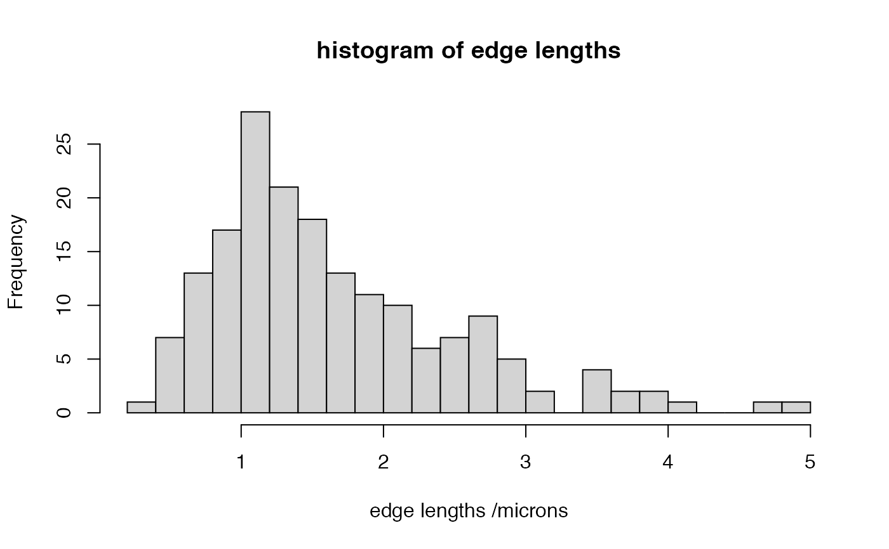

Calculate length of all segments in neuron
seglengths(x, all = FALSE, flatten = TRUE, sumsegment = TRUE)
| x | A neuron |
|---|---|
| all | Whether to calculate lengths for all segments when there are
multiple subtrees (default: |
| flatten | Whether to flatten the lists of lists into a single list when
|
| sumsegment | Whether to return the length of each segment (when sumsegment=TRUE, the default) or a list of vectors of lengths of each individual edge in the segment. |
A vector of lengths for each segment or when
sumsegment=FALSE a list of vectors
A segment is an ubranched portion of neurite consisting of at least
one vertex joined by edges.Only segments in x$SegList will be calculated
unless all=TRUE. Segments containing only one point will have 0
length.
#> Min. 1st Qu. Median Mean 3rd Qu. Max. #> 0.6273 2.1631 4.4999 9.0053 9.8379 84.1981hist(unlist(seglengths(Cell07PNs[[1]], sumsegment = FALSE)), br=20, main='histogram of edge lengths', xlab='edge lengths /microns')